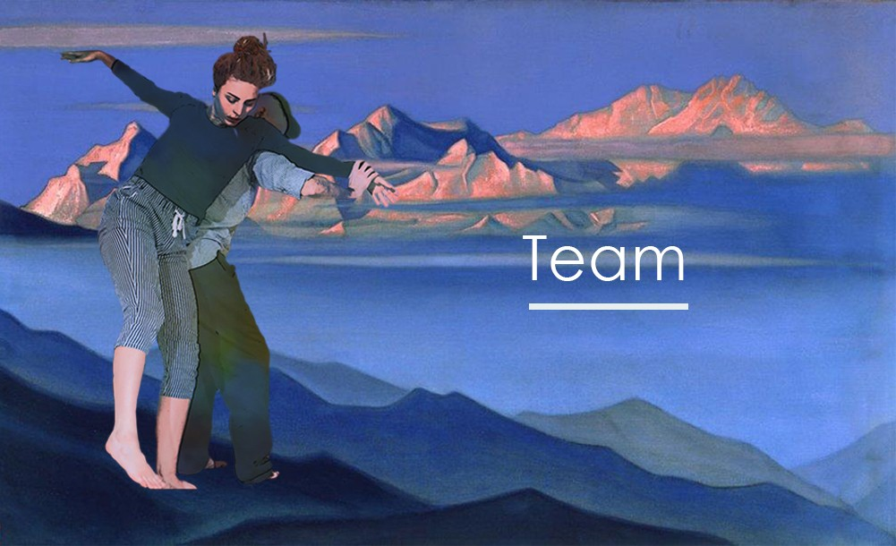
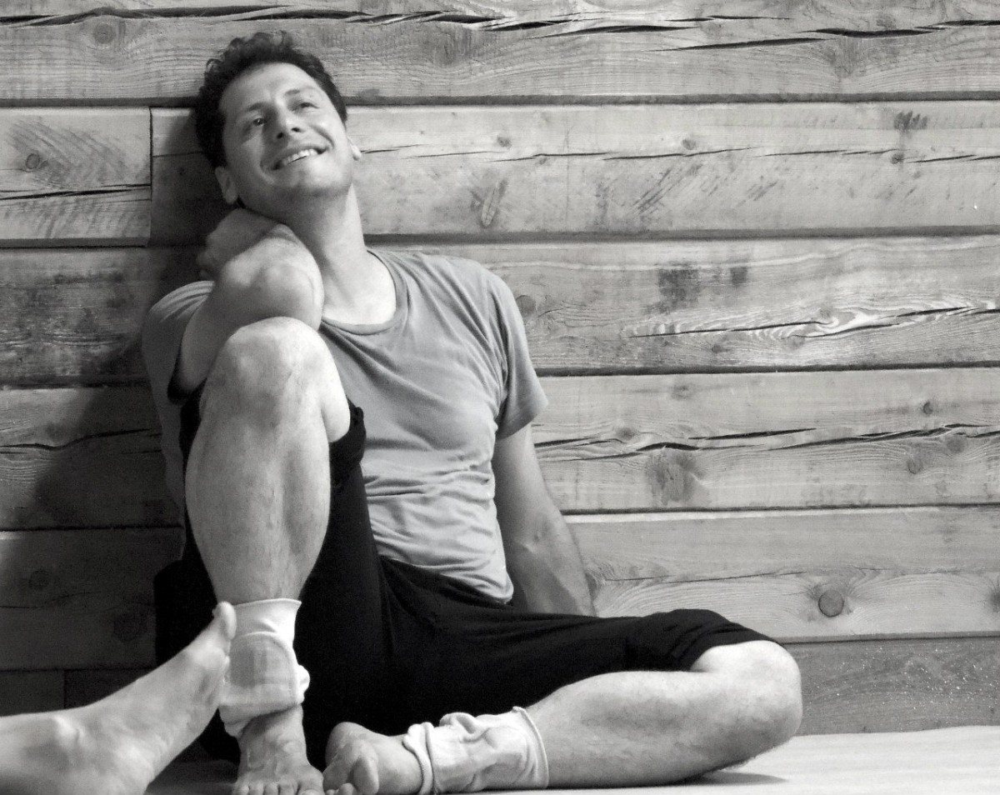
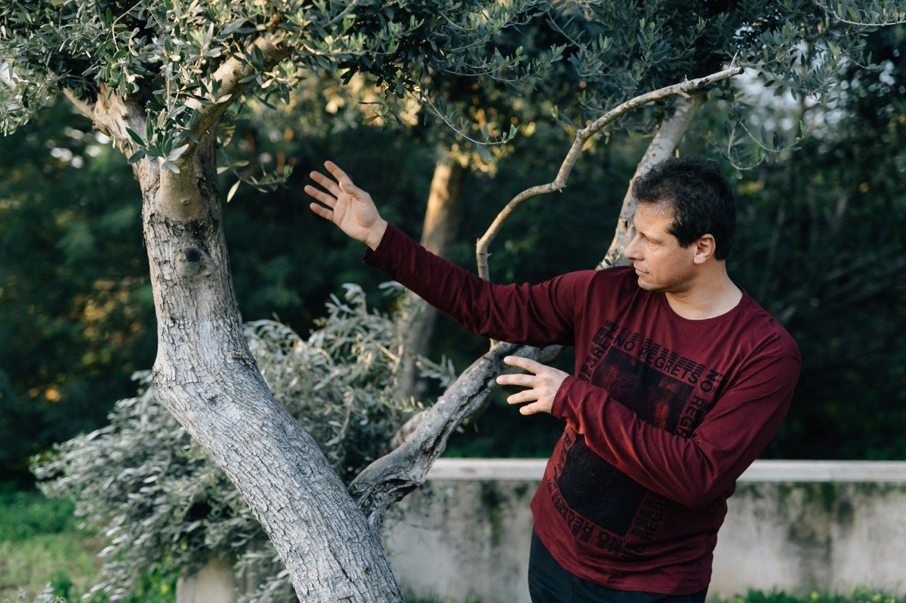
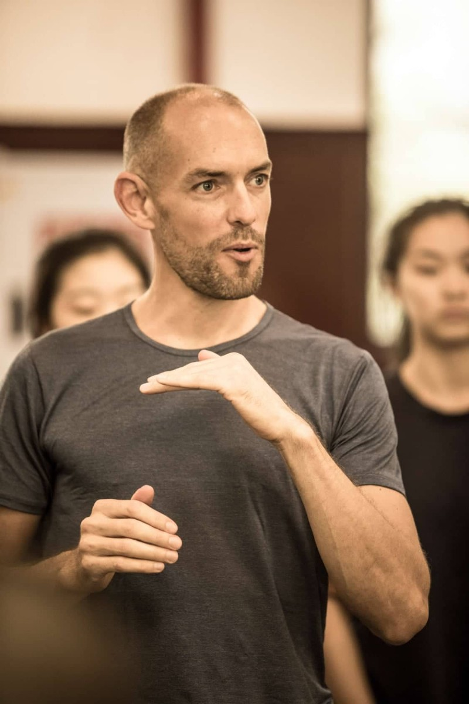
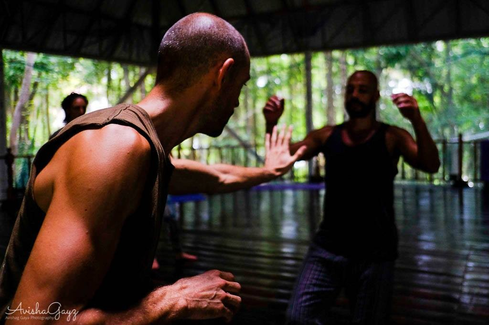
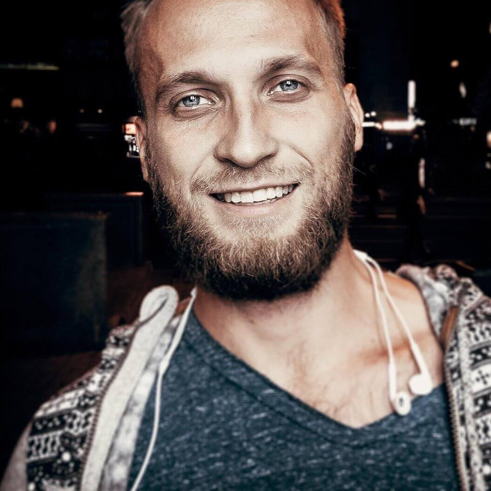
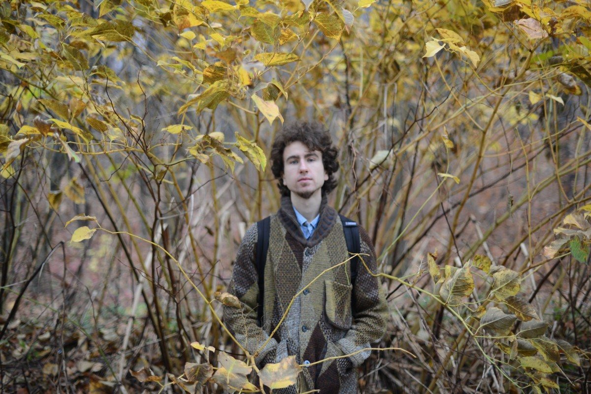
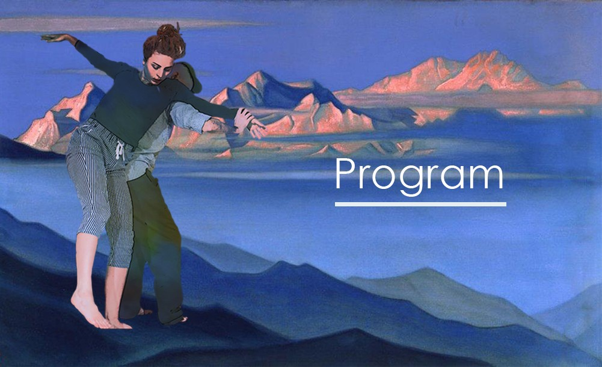
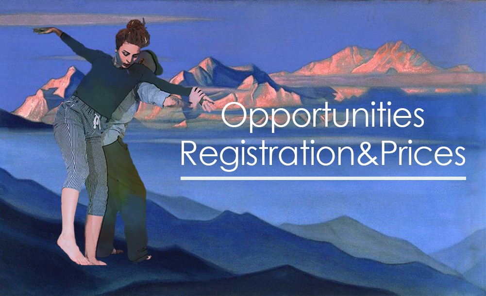

We are happy to introduce the first Contact Improvisation Tyrolean Festival and to invite you to celebrate one week together.
We are happy to introduce the first Contact Improvisation Tyrolean Festival and to invite you to celebrate one week together. Come and enjoy one of the most beautiful places in the world, in the heart of the Alpine mountains - Tyrol land.
July 21st to 27th you will be surrounded by rocks and forest, lakes and meadows, friends and high experienced teachers. You will be involved into tiny old Innsbruck city life. Bewitching nature around will inspire to make every movement from heart and to create the most beautiful picture of your life.
...Contact improvisation and acrobatics, solo-improvisation technique, performative, somatic practices, playfight... are waiting for you. Jams will be leaded by live vocalists and musicians. You will have opportunity to live in a your tent or in a shared common tent, eat tasty food, dance every day, hick up to the mountains, swim in the lakes and enjoy the spirit of Alps!
Team



Daniele Sardella / Italy
Mechanical Engineer, since 1997 is dedicated to Street Art, juggling and equilibrium, from 2002 it became his main job. In 2003 he came in contact with the Biotransazionale Method and begins to practise it and study its principles, and to integrate them with the study of circus techniques; simultaneously he got formed artistically by attending various courses of Equilibrium (Arial Miluca, Claude Victoria), clown (Rita Pelusio, Jean Manigault, Michelin Vanderpoel), dance (Claude Coldy, Lucia Latour, Ketty Russo, Simona Fichera, Marta Ciappina, Tom Weksler, Kira Kirsh, Nita Little, Angelika Donji, Ray Chung), studying theater at "Pontedera Theatre Foundation" (2004-2005) and working at the Bellucci Aquatic Circus (2005-2006). From 2009 to the present days he is forming in teaching a personal application of Biotransazionale Method to Handstand and Movement and to Contact Improvisation, through continuous personal research and by giving classes and intensive workshops. Now he is going deeply into the research of Acrobatic Fluid Dance and Acrobatic Contact Improvisation with special focus to training that increases both the health and the performance possibilities.
In 2017 teaches handstand, acrobatic movement, and contact improvisation also in India (Goa e Mumbai) and in China (Pechino, Shanghai, Guangzhou, Yinchuan, Nantong). In January 2018 he has been the organizer and host of the performance night if the Goa's Contact Festival. In April 2018 he teaches a one week workshop for the major dancer of the National Academy of Chinese Theatre Arts of Beijing (Oper of Beijing).
From October 2018 he is the teacher of Movement (Floorwork, Acrobatic Movement and Contact Impro) at the Roman School of Circus. From February 2019 he is the personal trainer and teacher of a dance of Carolina Kostner, Olympic athlete in ice skating.
Fly with Flow between sky and floor
The main focus of this intensive workshop is to learn how to train our body to improve its health conditions and at the same time its movement skills for individual dance and contact improvisation. Every day it will be composed of three different and integrated parts:
- We will start with an Active Postural Stretching in Movement, based on the knowledge of how the parts of the body are connected and using it to reduce compensation and get the stretching more efficient. Through this training, we will meet our body's particular limits, and learn to not pass them, and increase them in a respectful way while getting awareness of the connections between the different parts. In this way, we will enhance our movement possibilities and get already the movement more
- We will then explore the individual movement and how to get it efficient, fluid and effortless. We will learn some important basic tools (floorwork, change of levels, back bending, reversing the weight on the hands) that will get the personal movement's research more safe and rich and joyful.
- We will finally learn how to improvise in contact with other bodies, looking for flow and enjoyment. This last part integrates the tools explored in the first part of the class with the intent of learning how to listen to the partner's movement and communicate in an easy and effortless way, up to support and be supported and fly with easiness and care.
The training proposed is a healing process for several reasons:
- The Active Postural Stretching is derived by a physiotherapeutic approach (named Biotransazionale) and causes a better alignment of the body;
- Exploring one's personal movement with this gentle approach helps the body to redistribute the tensions in a coherent way;
- The training helps to open one's vision and be more adaptable to the external conditions;
- It also develops trust and listening for oneself and for the partner, without schemes or predetermined roles, invites the authenticity in communication and then in relationships


Alexander Kosko
Movement-voice therapist, Tai Chi teacher and CI dancer, performer, and traveler.
Alexander deals over 30 years with the body and movement material, starting with Martial Arts, meditation, Qigong and Tai Chi, continuing with psychology, dance-therapy, body-mind therapy, bodywork and massage practice, vocal and performance studies.
Contact Improvisation and performance learned from Nita Little, Andrew Harwood, Benno Voorham, Martin Keogh, Rey Chang, Arie Burstein, Mirva Makinen, Angela Donny, Ekaterina Basalaeva and many others.
Alexander teaching original material for 14 years in Russia, Israel and other countries. Creator and one of the leaders of Development Dance Israel Festival, part of The Association of ICIL (Israeli Contact Improvisation Leaders).
These days Alexander leads “School for voice, speech and public speaking”, gives weekly classes of “Physical hallucinations movement theatre”, leads long session explorations with blindfolds, works in his outdoor project “Creation from the cave”, leads abroad trips with kind of road-trainings, on regularly base performs in “Passive / Aggressive” performance.
“Imagination as a dance partner”
If neither current mood, playing music and my partner inspires my dance, can I find inspiration in Imagination?
There are so many sources to dance. And imagination - is one of the greatest supporters for infinite movement energy.
Technically, an image influence the nervous system and through it in a certain way stimulate body muscles. Our relation to image is emotion, that proposes movement direction and sets a certain intensity.
Moving from imagination, we can be completely free from external stimulation.
In contact dance, sometimes I meet partner by the inner response, visually enchanted by his or her movements. And this image of echo moves me in common body language with my partner.
In 3 classes “Imagination as a dance partner” we explore different approaches in solo and contact dance from the point of creative imagination.
We’ll play with self-body Image and a new quality of it brings us to our new dance. With static postures, we will stimulate our imagination and create new movement patterns. We explore the magical connection between color and movement. We will seek for different ideas of movement image transformation. We will use movement and imagining skills to enrich our ability to enter and accommodate in a contact jam space.
All this process will lead to small groups performances, inspired and choreographed by our imagination score.


Tamara Maksymenko - organizer, project leader, teacher
Tamara is professional dancer, choreographer and a teacher of contact improvisation and contemporary dance for 12 years already. She has been teaching many workshops all over the world (Poland, Spain, Israel, Austria, Italy, Greece, Finland, Egypt, Germany, Russia, Ukraine, Morocco, Bulgary). She is the founder of Motion Mode Dance Theatre (MMDT) and the creator of the DNAture, FEMMINILE, 6th DAY, The MIRROR, La Loba projects on the MMDT base. Organizer of Evenings of Improvisation around all over the world. 25 years of dance experience (since the early age of 4). She got medical education in body therapy and sociology at Dnipropetrovsk National University and trained at the Physical Theatre in Intragna (Switzerland) with Thomas Mattler http://www.keep-searching.ch/about.html Now Tamara is collaborating with the Austrian Culture Association Don Quichotte KulturZentrum ~ Freier Proberaum Kunst Manifeste ~ Innsbruck, Ukrainian Contemporary Dance Platform Association and she is a member of OFFTANZ Tirol Association (Austria)
"Support and flying in a dynamic"
For 1,5 hours of WS we can only open a few approaches to fly together. The workshop will be based on the idea of how to be light, dynamic and how to be strong but agile support. How to recognize clearly the direction of inertia during couple movements, how to help and to follow through the liftings energy.


Ulli Wittemann (Germany)
A passion for movement and growth has drawn Ulli to new directions since he was a child. From practicing Ballroom Dance and Hip Hop as a teenager and many years of studying different Martial Arts forms (Judo, Aikido, Kickboxing, Boxing and nowadays Muay Thai) he finally fell in love with Contact Improvisation in 2001 during his actor's studies at the University of Performing Arts in Frankfurt, Germany. After eight years of performing more than 1000 shows in the German State Theater system, he decided to change his focus from performing to sharing his love for Contact Improvisation, Acting, Awareness, and Communication in Munich and abroad. In the last years, he taught Workshops, Classes, and Retreats in China, Japan, India, Thailand, Bali, Israel, Palestine, Russia, USA, Canada, Turkey, and many European Countries. He is one of the Founders of the Tempelhof Contact Festival in Germany and the Conscious Flow Festival in India and currently co-organizes the new BODY MIND SOUL Festival (17. to 19. May), the third German edition of the Touch&Play Festival (1. to 7. August) and his nature retreat BEING HUMAN (28. August to 1. September).
"For me, a good class consists of the sensation of growth of every individual and the joy of the collective experience."
PLAYFIGHT INTENSIVE
A couple of years ago I started combining two of the things I love most in my life - dancing and playful fighting. In this workshop I am offering you a safe space, where the desire for intensity and dynamic play meets the awareness and listening of Contact Improvisation. From 25 years of experience in different martial arts forms (Judo, Aikido, Kickboxing, Boxing and Muay Thai) and Playfighting I derived a set of exercises, which enables also less sportive people to explore and enjoy their warrior energy in a safe environment. We will work with clearly structured exercises to practice keeping our awareness and presence even in moments of more intense interactions. With clear rules and high presence we can work on a level which we usually wouldn't dare to. There will also be phases of free play, where we can either play with the material we learned in a light sparring or just jam and dance or wrestle as you like. If wanted I will give you scores or ideas to play with and coach you and your partner/s in your work. We will wrap up the sessions by warming down together or doing some relaxing bodywork.
The focus of our work will be to replace old stereotypes of violent conflicts (or even trauma) with a joyful and playful togetherness. An opportunity for learning something about yourself and communication and to enjoy intensity together with presence, respect, humour and love!
Since 2011 I've been offering this work countless times in classes, workshops and festivals all over the globe and the reactions never were less than enthusiastic.
I'm excited to share this work at the Tyrolia Contact Festival- come and enjoy dancing, fighting and playing together!
Love and light, Ulli.
What to bring:
- a water-bottle
- comfortable clothes for intense moving - good to bring a second or third T- shirt!
- motivation for intense moving and connecting

Dmitriy Zakharov (Ukraine)
VideoMaker, photographer and CI dancer. Creates video stories of the emotional body, and of the people who create incredible stories with their movements.

Denys Petryshyn - musician
A multi-instrumentalist from Ukraine (guitar, didgeridoo, jew's harp and vocal). Likes playing the music that tends to immerse into a place where nothing is left except space for discovering yourself. By watching, listening, dancing...
Program

Our team prepared for you really tasty program of workshops, underscore jams, trackings into the mountains + swimming in the lake in a day-off (24th of July). Festival will be filled with the art of painters. If you are one of them and you would like to have a place for a stand of your work, please tag it in registration.
20th of July (Saturday) is an arrival day.
28th of July (Sunday) is a day of departure.
Location
Dear participants, the team of CI Tyrol Festival decided to change the official place of living - camping place, because of too unpredictable weather this year. Recently it was only 14 degrees during the day, under the sun and only two days before it was up to 30... We decided that nothing is worth to get sick. At the same moment, these changes bring us more free time during the day, because of no way to the dancing place and then back again to the camping. We propose to all of the participants to live, to dance, to eat together in the center of Innsbruck - Street Motion Studio (Viaduktbögen 7-10, 6020 Innsbruck, Österreich). We have three big rooms, shower, toilet, a kind of coffee machine (fridge), fridge, entrance room with sofa and chairs, dressing rooms where you can put all your stuff, we have a courtyard for parking and with a small chill zone. Your important things will be in safety. There is warm, cozy and super useful. We don't have there washing machine, but in Innsbruck center, we have some laundries with very available prices and close to Street Motion Studio. Teachers, organizers, and musicians will live in the same place (in different rooms). As well, we have there folding screens to divide a bit more space. So, please, take your sleeping bag and mat if you have, and you are very and very welcome in Street Motion Studio.
How to get
To reach Tyrol land by plane from different parts of the world is much better through Munich or Memmingen (Ryanair, Wizzair... Low-cost airlines) then you can take a FlixBus to get to Innsbruck (all prices you can find on the internet on the websites of transport companies. Also, we would suggest to consider Blablacar. Munich - Innsbruck, Vienna - Innsbruck, those two are very popular directions. Definitely, you will find something.) From HBf (main railway station) and from Flix Bus station you can walk to Street Motion Studio by foot. From HBF - it's approximately 8 min, from flix bus is more. Please download the map before (if you'll lose mobile connection) and just follow strait there - Viaduktbögen 7-10, 6020 Innsbruck, Österreich.
The team of CI Tyrol Fest is excited to meet all
Dancing space — Viaduktbogen 7-10, 6020 Innsbruck, Austria:
Opportunities

Dear participants, we offer you a few possibilities to pay. As fast as you will register will help us to organize everything in the best way that's why the earliest registration is the cheapest.
The second opportunity you will have is to be a helper at our festival, which gives you a good discount. You will be part of the organizational process and will be responsible for several tasks.
The third opportunity will be for painters, sculptor or any kind of handmade craftsman. If you would like to sale/share your art or skills at our festival you will receive a 10% discount for participation!
Price
Full Participation
Living in tent/full participation in WS, jams/food is included till July, 10th - 340 euro
from July, 10th - 390 euro
For helpers!
Attention! For today we are done. In case you have lack of possibilities and a huge desire to dance, write about it,please, via mail
till July, 10th - 210 euro
from July, 10th - 260 euro
We hope to see you at the CI Tyrol Festival 21st-27th of July, 2019!!!
You are welcome to register below.
In case of changing mind to participate after registration, 50% of the prepayment will not come back. Your prepayment is proof for the festival to be realized. Please, respect the organization process.
With best regards, the team of CI Tyrol Festival